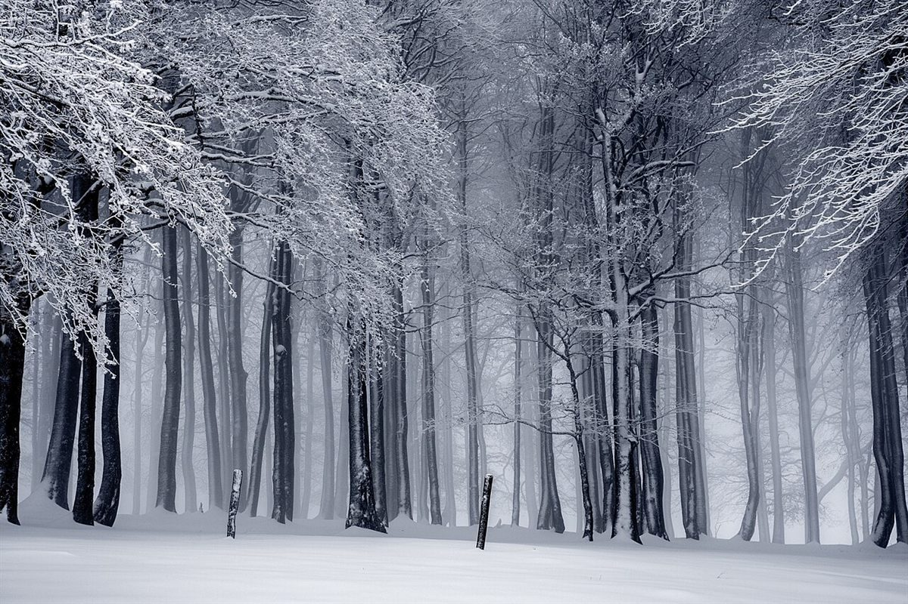
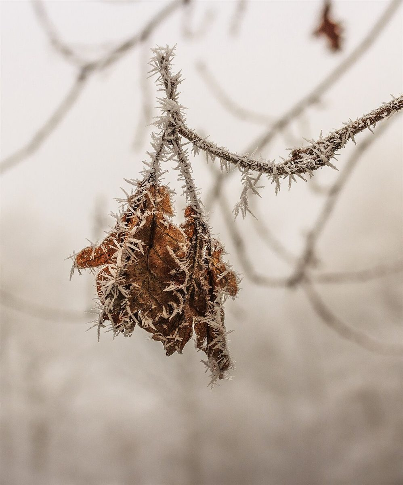

店のこと
店のこと
お店について確認できているのは、所在地とInstagramのアカウントだけです。
確認できていること
- 店名は「喫茶トナカイ」、業種は喫茶店(カフェ)
- 所在地は岐阜県大垣市赤坂町165-4(〒503-2213)
- 電話番号はなし。連絡はInstagramから
- 営業時間・定休日・メニュー・価格・ご予約・駐車場は準備中
このページの「想像してみる」以降は、制作側が想像して書いたものです。お店の実際の様子・考え・メニューとは関係がありません。

想像してみる
角の三つの段階を、図にしてみた
由来は分かりません。制作側は、トナカイの角が「袋角」「枝角」「落角」と移り変わることから、このサイトの構成を考えました。下の図は、その連想を表した制作側の簡単な図案です。
- 袋角やわらかく、まだ短い
- 枝角硬く、枝分かれする
- 落角役目を終えて、地面へ

もうひとつの連想
冬のあいだの、小さな静けさ
霜をまとった枯れ葉や、雪をかぶった森。制作側は、角を落とした冬のトナカイから、静かな季節の景色を思い浮かべました。お店の雰囲気を示すものではなく、写真は国外・撮影地不明のイメージです。